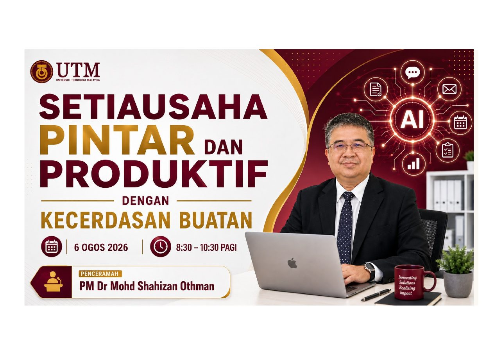
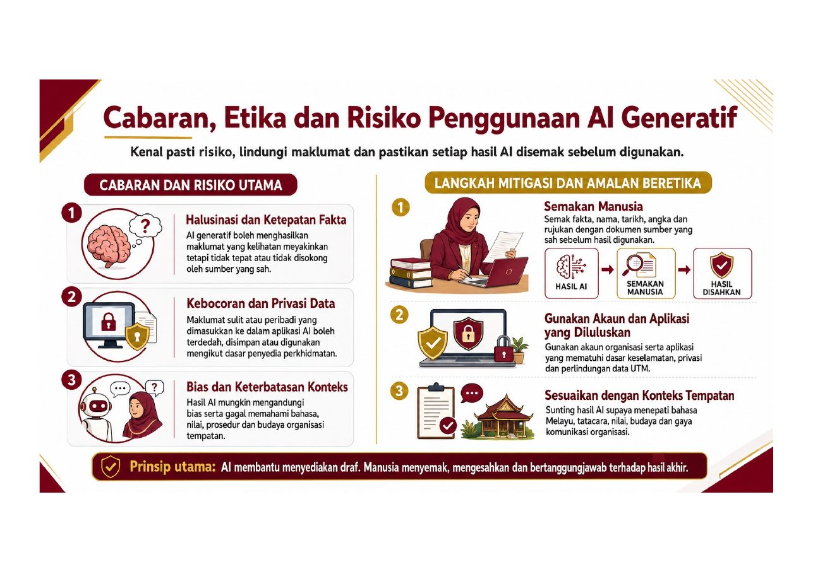
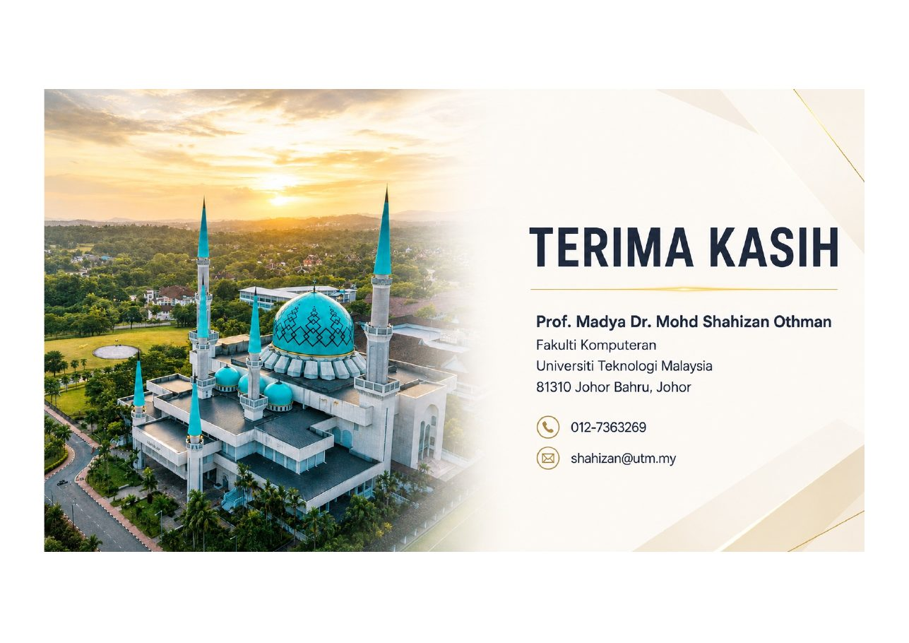

E-mel & mesej
Menyusun keutamaan dan menyediakan draf yang profesional.
UNIVERSITI TEKNOLOGI MALAYSIA • LATIHAN PROFESIONAL
Daripada tugasan rutin kepada kerja bernilai tinggi. Kuasai AI untuk berkomunikasi, menghasilkan dokumen, menganalisis maklumat dan membuat keputusan dengan lebih yakin.

✦ AI Praktikal✓ Kerja Lebih PantasMENGAPA PROGRAM INI?
Setiausaha moden mengurus pelbagai aliran maklumat serentak. AI membantu meringkaskan kerja berulang supaya lebih banyak masa boleh diberikan kepada ketepatan, koordinasi dan layanan manusia.
Menyusun keutamaan dan menyediakan draf yang profesional.
Meringkas, menyemak dan menstruktur kandungan dengan pantas.
Menukar audio kepada tindakan, keputusan dan susulan.
Menjelaskan nombor melalui carta dan naratif yang mudah difahami.
HASIL PEMBELAJARAN
Mengenal fungsi, kekuatan dan batasan AI dalam tugasan kesetiausahaan.
Menggunakan Gemini dan NotebookLM untuk menghasilkan kandungan berkualiti.
Melindungi data, menyemak fakta dan mengekalkan pertimbangan manusia.
PERJALANAN PEMBELAJARAN
Asas kecerdasan buatan dan perubahan dunia pekerjaan.
Struktur prompt yang jelas, berkonteks dan boleh disemak.
E-mel, surat, minit, laporan, slaid, poster dan video.
NotebookLM untuk menukar sumber kepada wawasan.
Analisis data, carta dan pelan tindakan yang lebih tersusun.
Ketepatan, privasi, hak cipta dan tanggungjawab manusia.
STATISTIK AI
Mengikut kumpulan umur dan jantina (%)
Peratus responden mengikut jenis penggunaan (%)
KOTAK ALAT DIGITAL
Bukan semua alat perlu digunakan. Mulakan dengan satu masalah sebenar, pilih alat yang sesuai, kemudian semak hasilnya.
PUSAT PROMPT AI
Pelajari formula, ikuti proses langkah demi langkah, bina prompt sendiri dan cari prompt mengikut tujuh kategori tugasan setiausaha UTM.
PANDUAN PENGGUNAAN AI
Pelajari formula prompt, kaedah semakan, perlindungan data dan amalan penggunaan AI yang bertanggungjawab dalam tugasan pentadbiran.
SUMBER AI
Akses contoh hasil, templat e-mel, surat, minit, laporan, kertas kerja, tentatif program, storyboard video, kuiz kendiri, glosari dan FAQ Gemini.
PANDUAN PRAKTIKAL
Terokai contoh penggunaan Google Gemini dan Gemini Notebook berdasarkan slaid kursus.
AI YANG BERTANGGUNGJAWAB
AI boleh mempercepatkan kerja, tetapi hasilnya tidak sentiasa tepat. Rahsiakan maklumat sensitif, semak sumber, elakkan bias dan pastikan keputusan akhir kekal pada manusia.

GALERI PEMBELAJARAN
Klik mana-mana visual untuk paparan penuh. Gunakan carian untuk mencari topik tertentu.
SOALAN LAZIM
AI lebih sesuai dilihat sebagai pembantu yang mengurus tugasan berulang. Pertimbangan, empati, pengetahuan organisasi dan tanggungjawab kekal memerlukan manusia.
Elakkan kata laluan, nombor pengenalan, rekod peribadi, dokumen sulit, data kewangan sensitif dan maklumat yang tidak dibenarkan organisasi.
Berikan konteks yang jelas, minta sumber, bandingkan dengan dokumen asal dan lakukan semakan manusia sebelum digunakan.
Gunakan Gemini untuk tugasan harian dan Gemini Notebook untuk bekerja berasaskan koleksi sumber yang telah dipilih.
HUBUNGI PENCERAMAH
PM Dr Mohd Shahizan Othman
Fakulti Komputeran
Universiti Teknologi Malaysia, 81310 Johor Bahru, Johor
